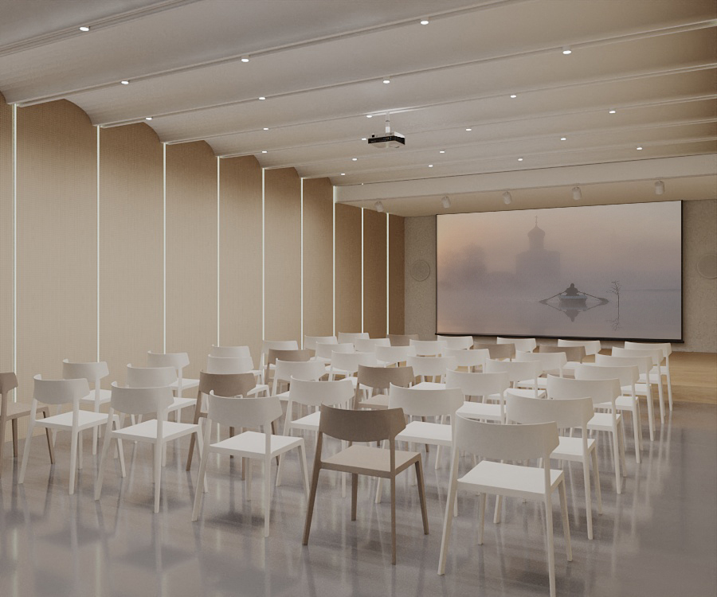
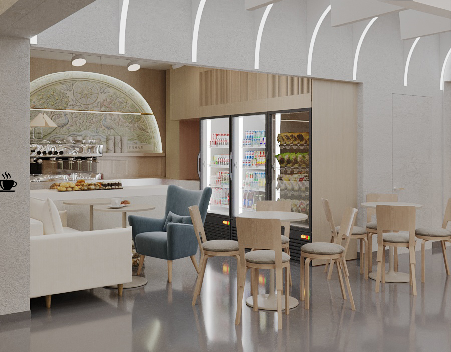
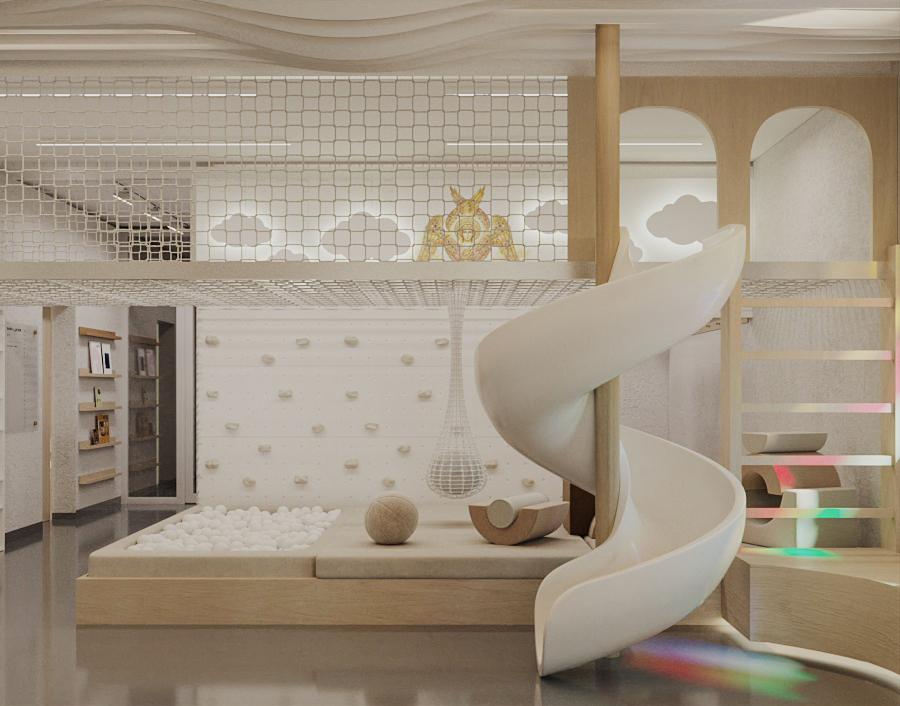

☦Подворье РПЦ (МП)
Проект благоустройства · ЗИЛАРТ
Москва · ЗИЛАРТ
Храм Святой блаженной Ксении Петербургской
При храме создаётся живой приход и райский сад — пространство встречи, тишины и общего дела. Тёплые интерьеры для людей всех возрастов и цветущий сад, задуманный как образ рая на земле, — место, куда приходят не только на службу, но и чтобы быть вместе.
Приход · интерьеры



Райский сад · визуализации


Узнайте больше · поддержите
Откройте проект на сайте
Наведите камеру телефона на QR-код: интерактивные 3D-туры по интерьерам и саду, история храма и возможность поддержать воплощение проекта.
↗Храм Святой блаженной Ксении Петербургской
ЗИЛАРТ · Москва · Подворье РПЦ (МП)
Проект
благоустройства
2026
благоустройства
2026